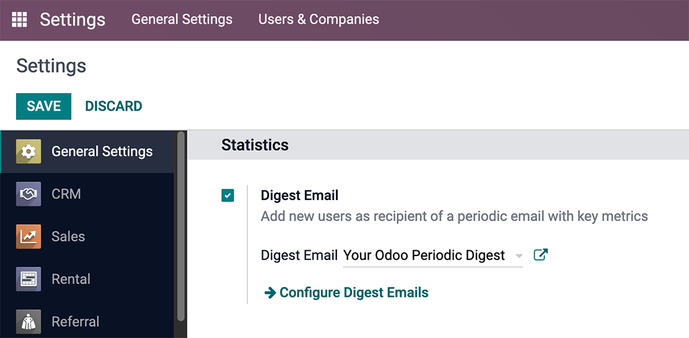

Correos electrónicos de resumen¶
Los correos electrónicos de resumen son los resúmenes que los usuarios de una empresa recibirán en su correo electrónico. Estos incluyen información muy importante relacionada con el rendimiento de su empresa.
Para empezar a enviar correos electrónicos de resumen vaya a , active la función Correos electrónicos de resumen y haga clic en Guardar.
Tiene muchas opciones de configuración para personalizar los correos de resumen, como:
Decidir qué KPI se comparten en el correo de resumen.
Determinar la frecuencia con la que se envían los correos de resumen.
Elegir qué personas de la empresa reciben estos correos.
Crear correos de resumen personalizados.
Agregar KPI adicionales (para esto se necesita la aplicación Studio).
Nota
La función Correos electrónicos de resumen está habilitada de forma predeterminada. La plantilla principal es Su resumen periódico de Odoo, incluye todas las métricas de KPI relacionadas a su base de datos de Odoo y los administradores la reciben todos los días.
Advertencia
Al crear duplicados de la base de datos desde los que se puedan enviar correos electrónicos (es decir, que no estén en modo de prueba), los correos electrónicos de resumen se seguirán enviando desde el duplicado a no ser que se desactive la función.
Para desactivar los correos electrónicos de resumen vaya a . Después, para desactivar la función Correos electrónicos de resumen solo tiene que desmarcar la casilla de verificación junto a ella y hacer clic en Guardar. Obtenga más información en la sección Desactivar el correo de resumen.
Personalizar correos electrónicos de resumen¶
Para personalizar el Correo electrónico de resumen predeterminado (Su resumen periódico de Odoo), vaya a , seleccione Su resumen periódico de Odoo y haga clic en el icono ↗️ (enlace externo) junto al menú desplegable.
Aparece una ventana emergente que presenta una variedad de ajustes editables que incluyen:
Nombre del resumen: el nombre del correo de resumen.
Periodicidad: controla la frecuencia con la que se envían los correos de resumen (Diario, Semanalmente, Mensualmente, o Trimestralmente).
Siguiente fecha de envío: la fecha en la que el correo de resumen se enviará de nuevo.
Pestaña de KPI: marque o desmarque cada KPI que aparece en el correo de resumen. Para activar un KPI en el correo de resumen solo debe seleccionar la casilla correspondiente. Consulte la sección sobre KPIs.
Pestaña de Destinatarios: agregar o quitar usuarios que reciben el correo de resumen. Vea más infromación sobre Destinatarios.
Nota
Los abbr:KPI (Indicador clave de rendimiento) se pueden personalizar con la aplicación Studio de Odoo. Si instala esta aplicación, se le harán cargos adicionales. Consulte la sección sobre KPI personalizados con Studio.

Desactivar el correo de resumen¶
Para desactivar un correo de resumen de manera individual, primero vaya a y haga clic en Configure los correos electrónicos del resumen. Después, seleccione el correo electrónico de resumen de esa lista que desea desactivar.
Después, haga clic en DESACTIVAR PARA TODOS para desactivar el correo electrónico para todos, o en CANCELAR MI SUSCRIPCIÓN para eliminar al usuario que inició sesión y se está usando en ese momento de la lista de correo. Estos botones se ubican en el menú superior, justo arriba de Nombre del resumen.
Enviar el correo de resumen de forma manual¶
Para enviar un correo de resumen de forma manual, primero vaya a y haga clic en Configure los correos electrónicos del resumen. Después, seleccione el correo electrónico de resumen deseado y haga clic en enviar ahora. Este botón se ubica en el menú superior, justo arriba de Nombre del resumen.
KPIs¶
Puede agregar KPI configurados con anterioridad al correo electrónico de resumen desde la pestaña KPI del formulario de correo electrónico correspondiente.
Primero, vaya a y haga clic en Configure los correos electrónicos del resumen.
Después, seleccione el correo electrónico de resumen deseado y abra la pestaña KPI.
Para agregar un KPI al correo electrónico de resumen, solo seleccione la casilla junto al KPI deseado. Haga clic en Guardar después de que haya agregado (o quitado) todos los KPI necesarios.
Los KPI disponibles de forma inmediata en la pestaña KPI de la plantilla de correo electrónico de resumen son los siguientes:

- General
Usuarios conectados
Mensajes
- Proyecto
Tareas abiertas
- Reclutamiento
Empleados
- CRM
Nuevos leads/oportunidades
Oportunidades ganadas
- Ventas
Todas las ventas
Ventas de comercio electrónico
- Punto de venta
Ventas del punto de venta
- Chat en vivo
% de satisfacción
Conversaciones gestionadas
Tiempo de respuesta (seg)
- Servicio de asistencia
Tickets cerrados
- Facturación
Ingresos
Banco y movimientos de efectivo
Destinatarios¶
Los destinatarios del correo de resumen se agregan desde la pestaña Destinatarios del formulario del correo electrónico de resumen.
Para agregar un destinatario vaya a y haga clic en Configure los correos electrónicos del resumen. Después, seleccione el correo electrónico de resumen deseado y abra la pestaña Destinatarios.
Para agregar un destinatario, haga clic en Agregar una línea y aparecerá una ventana emergente para agregar destinatarios, donde podrá ver todos los usuarios que puede agregar como destinatarios.
En la ventana emergente, marque la casilla a un lado del nombre de los usuarios (o el usuario) y haga clic en el botón Seleccionar.
Para quitar un usuario como destinatario, solo haga clic en el icono ❌ (quitar) que se encuentra hasta la derecha del usuario enlistado en la pestaña Destinatarios.
Haga clic en Guardar para implementar los cambios.
Crear correos electrónicos de resumen¶
Para crear un correo electrónico de resumen vaya a y haga clic en Configure los correos electrónicos del resumen. Después, haga clic en Crear para crear un nuevo correo electrónico de resumen.
Se le redirigirá a una nueva página donde aparecerá una plantilla de correo electrónico de resumen en blanco. Aquí tendrá varias opciones de personalización, como:
Nombre del resumen: el nombre del correo de resumen.
Periodicidad: controla la frecuencia con la que se envían los correos de resumen (Diario, Semanalmente, Mensualmente, o Trimestralmente).
Siguiente fecha de envío: la fecha en la que el correo de resumen se enviará de nuevo.
Pestaña de KPI: marque o desmarque cada KPI que aparece en el correo de resumen. Para activar un KPI en el correo de resumen solo debe seleccionar la casilla correspondiente. Consulte la sección sobre KPIs.
Pestaña de Destinatarios: agregar o quitar usuarios que reciben el correo de resumen. Vea más infromación sobre Destinatarios.
Aquí podrá agregar el nombre del resumen a su correo electrónico, especificar la periodicidad y elegir los KPI y los destinatarios que usted desee.
Después de hacer clic en guardar, el nuevo correo electrónico de resumen estará disponible para seleccionarlo en el campo Correo electrónico de resumen ubicado en .
KPI personalizados con Studio¶
Los KPI en un formulario de correo electrónico de resumen en la pestaña KPI se pueden personalizar con la aplicación Studio de Odoo.
Advertencia
Si instala la aplicación Studio de Odoo, se le harán cargos adicionales a su base de datos.
Para empezar, haga clic en el icono 🛠️ (herramientas) en la parte superior derecha de la pantalla. Este es el enlace a la aplicación Studio de Odoo.
Para crear datos adicionales, cree dos campos en el objeto del resumen:
Cree un campo booleano llamado
kpi_myfieldy muéstrelo en la ventana de KPI.Cree un campo computado llamado
kpi_myfield_valueque calcule el KPI personalizado.Seleccione el KPI en la pestaña KPI.
Truco
Auí está el código fuente para el archivo digest.py, que guía al programador en la codificación del campo computado.
Ver también
Los usuarios también pueden hacer clic en la pestaña Destinatarios y después en el menú de tres puntos verticales (kebab) para editar esta vista. Haga clic ya sea en EDITAR VISTA DE LISTA o en EDITAR LISTA DE FORMULARIO para modificar esta pestaña.
Tabla de referencia de los valores calculados¶
ETIQUETA |
VALOR |
|---|---|
Usuarios conectados |
|
Mensajes enviados |
|
Nuevos leads |
|
Oportunidades Ganadas |
|
Tareas Abiertas |
|
Tickets cerrados |
|
% de felicidad |
|
Conversaciones manejadas |
|
Tiempo de respuesta (seg) |
|
Todas las ventas |
|
Ventas de comercio electrónico |
|
Ingreso |
|
Movimientos de bancarios y de efectivo |
|
Ventas de TPV |
|
Nuevos empleados |
|